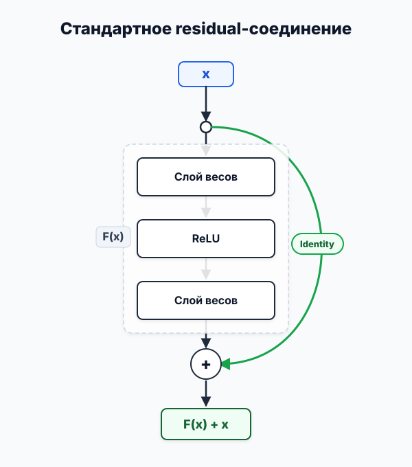
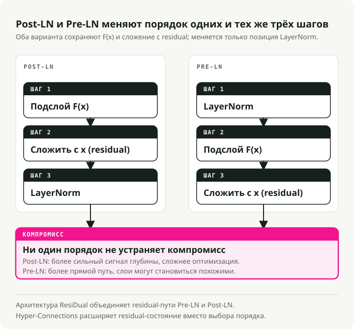
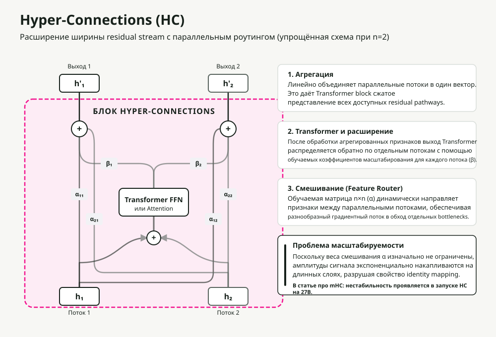
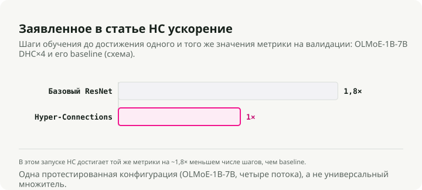
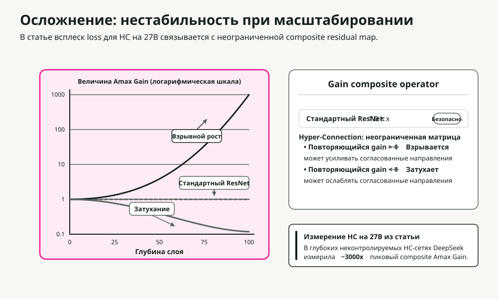
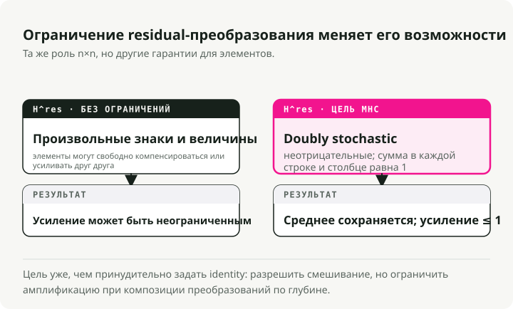
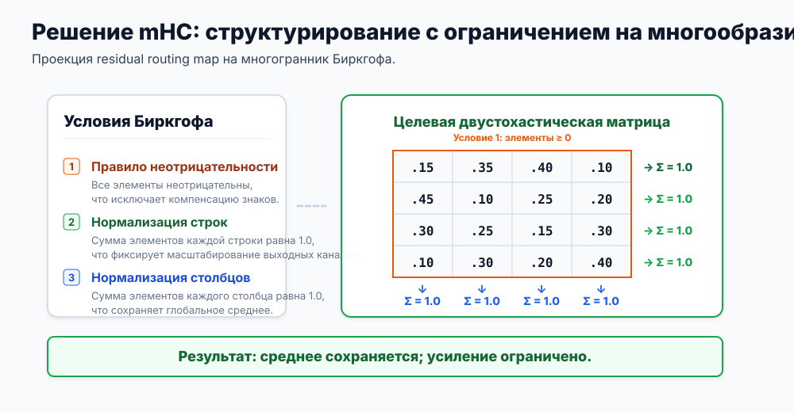
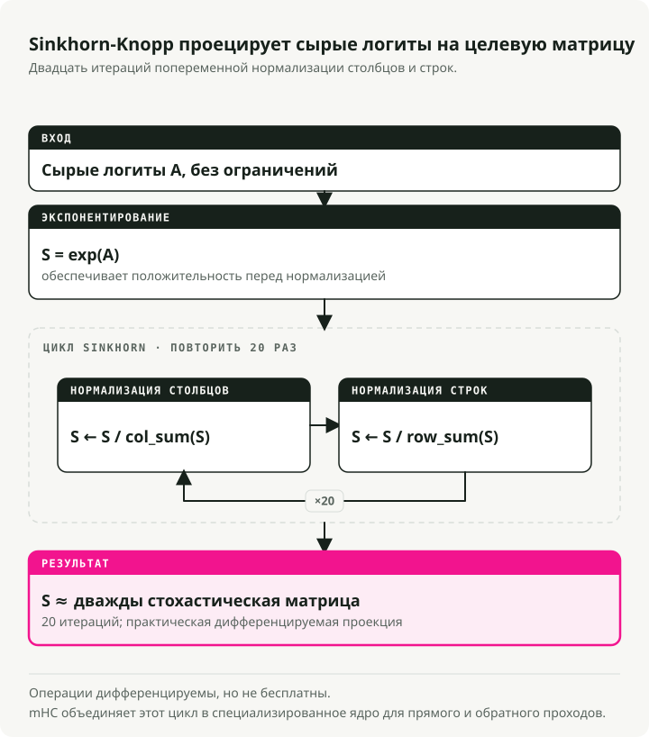
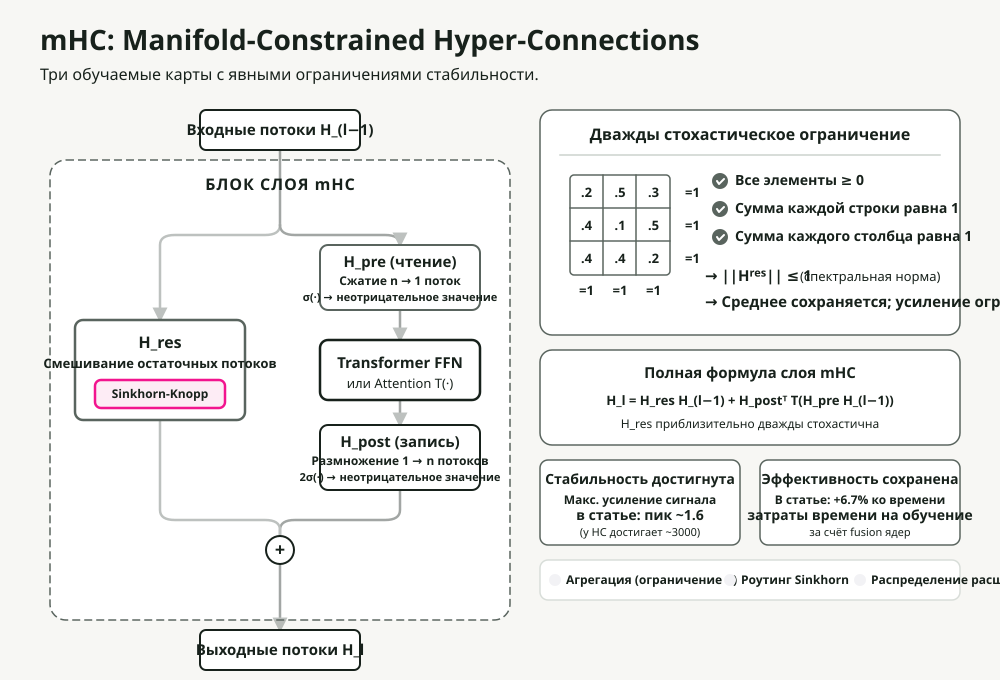

Автоматический перевод
Эта статья была автоматически переведена с оригинальной английской версии.
Manifold-Constrained Hyper-Connections (mHC): масштабирование residual-потока в DeepSeek
Современное глубокое обучение опирается на residual connection. После десятилетия наращивания глубины слоёв исследователи из DeepSeek задали другой вопрос: что если масштабировать не глубину, а ширину? Их ответ, Manifold-Constrained Hyper-Connections (mHC), решает давнюю проблему стабильности при масштабировании по ширине.
В этом посте я разберу эволюцию от базовых residual-соединений к mHC, объясню, зачем был нужен каждый шаг, и как решение DeepSeek реально работает в крупном масштабе.
Кратко: Hyper-Connections расширяют residual-поток в несколько параллельных потоков для более быстрой сходимости, но ломают identity mapping, которая обеспечивает стабильное обучение. mHC восстанавливает стабильность, ограничивая матрицы смешивания политетопом Биркгофа (дважды стохастическими матрицами) с помощью дифференцируемого алгоритма Sinkhorn-Knopp. Результат: 4 параллельных потока всего при 6.7% дополнительной стоимости обучения.
Почему residual connections работают
Прежде чем разбирать, что именно исправляет mHC, нужно понять, на чём он строится.
Проблема глубины
Добавление новых слоёв должно увеличивать ёмкость модели. На практике очень глубокие сети становятся сложнее в обучении. Ёмкость есть. Ломается именно градиентная оптимизация: градиенты затухают (становятся почти нулевыми) или взрываются (растут без ограничений) при прохождении через множество слоёв.
Решение через residual
В статье ResNet paper было предложено элегантное решение. Вместо прямого отображения модель учит residual, то есть отклонение от identity:

Ключевой трюк — identity shortcut. Когда residual-функция F(x) выдаёт ноль, слой превращается в идеальный pass-through. Из этого следуют два последствия:
- Градиентная магистраль: градиенты идут напрямую через shortcut, обходя затухание.
- Простая оптимизация: если оптимально identity-преобразование, сети достаточно научиться F(x) → 0.
Это одно архитектурное изменение сделало обучаемыми сети с сотнями слоёв.
Усложнение в Transformer: размещение Layer Normalization
Transformers добавили новую переменную: где размещать Layer Normalization (LN). Решение выглядит незначительным, но это не так.

| Вариант | Размещение LN | Преимущество | Ключевое ограничение |
|---|---|---|---|
| Post-LN | После residual-блока | Высокая ёмкость | Затухание градиентов: LN в основном пути перескалирует градиенты на каждом слое |
| Pre-LN | Перед residual-блоком | Отличная стабильность | Коллапс представлений: признаки становятся похожими между слоями |
Архитектура ResiDual попыталась решить это через двойные residual-пути: один Pre-LN для стабильности и один Post-LN для ёмкости. Но residual-поток всё ещё оставался один. А что если сделать несколько параллельных потоков?
Hyper-Connections: революция ширины
Hyper-Connections (HC) пошли другим путём. Не просто добавлять глубину, а расширять ширину residual-потока.

Что такое "поток"?
В стандартных transformer входные token embeddings образуют один \(d\)-мерный вектор, представляющий признаки токена. Эта единственная последовательность векторов и есть "residual-поток", проходящий через каждый блок.
В Hyper-Connections поток — это одна из \(n\) параллельных инстанциаций этого состояния.
Как они получаются? В начале сети исходный входной embedding реплицируется \(n\) раз (где \(n\) — это "expansion rate", обычно 4). Стандартное скрытое состояние размерности \(d\) превращается в \(n \\times d\) "hyper hidden matrix".
Эти \(n\) одинаковых потоков проходят через transformer-слои сети, где механизмы ниже по-разному агрегируют, маршрутизируют и расширяют их. Поэтому они сразу расходятся и начинают кодировать разные пути представления.
Базовые механизмы
Вместо одного residual-пути HC поддерживает \(n\) параллельных потоков через всю сеть. На каждом transformer-блоке выполняются три операции, каждая управляется небольшими обучаемыми весами:
- Aggregation (\(H_{pre}\), pre-mapping): \(n\) входных потоков сжимаются в один вектор для transformer-блока с помощью обучаемой матрицы \(H_{pre}\). Каждый поток умножается на обучаемый вес важности, поэтому это работает как входной фильтр.
- Expansion (\(H_{post}\), post-mapping): после основного transformer-блока (Attention или MLP) его выход распространяется в \(n\) отдельных потоков с помощью обучаемой матрицы \(H_{post}\). Это работает как выходной gate, где каждый поток масштабируется своим обучаемым весом.
- Mixing (межпоточная маршрутизация): новые расширенные потоки объединяются с исходными residual-потоками. Обучаемая матрица "feature router" размера \(n \\times n\) (\(\\mathbf{H}^{res}\)) определяет, как информация из каждого потока перетекает в остальные, перекрёстно смешивая признаки перед следующим слоем.
Матрица смешивания H — это диспетчер трафика: она маршрутизирует признаки между потоками на основе выученных шаблонов. Информация течёт гораздо богаче, чем по одному residual-пути.
Результаты

HC сходится примерно в 1.8× быстрее, чем стандартные residual-соединения. Параллельные потоки дают градиентам больше путей и позволяют сети удерживать более разнообразные представления.
В чём подвох
Есть критическая проблема: HC нестабилен в большом масштабе.
Почему Hyper-Connections ломаются
Гибкость, которая делает HC мощным, одновременно и ломает его. Она разрушает identity mapping, из-за которой residual-архитектуры вообще обучаются.

Математика нестабильности
В стандартных residual-схемах:
Когда \(F(x) \\rightarrow 0\), это даёт identity: \(x_{l+1} = x_l\). Сигнал проходит без изменений.
В Hyper-Connections residual-путь включает умножение на матрицу:
Через L слоёв сигнал становится:
Если значения в H отклоняются даже немного от 1.0, это произведение либо:
- Взрывается: значения > 1.0 экспоненциально накапливаются.
- Затухает: значения < 1.0 экспоненциально убывают.
Команда DeepSeek измеряла это через "Amax Gain Magnitude", которая отслеживает максимальное отношение величины выходного сигнала к входному по всем слоям. В стандартном HC это значение достигает ~3000 в глубоких сетях. На этом этапе обучение уже неработоспособно.

Главная проблема: неограниченные матрицы могут принимать любые значения (отрицательные числа, большие по модулю коэффициенты, что угодно). Нужен способ удерживать их в "хорошо ведущемся" множестве, где они сохраняют энергию сигнала так же, как identity.
Решение mHC: геометрические ограничения
Ключевая идея mHC в том, что можно получить и гибкую маршрутизацию, и стабильность, если ограничить матрицы смешивания определённой математической структурой: политетопом Биркгофа, множеством всех дважды стохастических матриц, где сумма по каждой строке и каждому столбцу равна 1, а все элементы неотрицательны.

Три ограничения
mHC ограничивает матрицу смешивания H^res так, чтобы она была дважды стохастической: все элементы неотрицательны, а сумма по каждой строке и каждому столбцу ровно 1. Это одновременно задаёт три свойства:
| Ограничение | Правило | Почему это важно |
|---|---|---|
| Положительность | Все элементы > 0 | Предотвращает осцилляцию знака, которая дестабилизирует градиенты |
| Сумма по строке = 1 | Каждая строка суммируется в 1.0 | Нормализует вклад в выход; ни один поток не доминирует |
| Сумма по столбцу = 1 | Каждый столбец суммируется в 1.0 | Нормализует распределение входа; все потоки вносят честный вклад |
Критический результат: Energy In = Energy Out. Величина сигнала сохраняется глубоко в сети, что устраняет проблему экспоненциального взрыва.
У этого ограничения есть и полезные математические следствия:
- Спектральная норма ≤ 1: спектральная норма (наибольшее сингулярное значение) ограничивает усиление сигнала. Дважды стохастические матрицы математически не расширяют сигнал.
- Замкнутость относительно умножения: композиция дважды стохастических матриц даёт другую дважды стохастическую матрицу.
- Взвешенное усреднение: операция становится выпуклой комбинацией (взвешенным средним, где веса суммируются в 1) входов, сохраняя общую величину сигнала.
Алгоритм Sinkhorn-Knopp
Проблема в том, как заставить обучаемую матрицу быть дважды стохастической и при этом сохранить дифференцируемость? Это делает алгоритм Sinkhorn-Knopp. Это итеративная проекция, которая сходится к дважды стохастической форме всего за несколько шагов.

Разберём на конкретном примере:
Шаг 1: Положительность. Применяем exp() к сырым весам, чтобы все элементы были строго положительными:
Raw Matrix → Positive Matrix
[-0.5 2.1 0.8] [0.6 7.9 2.2] Σ=10.7
[ 1.3 -4.0 1.9] exp [3.7 0.02 6.7] Σ=10.4
[ 0.1 0.6 -0.2] → [1.1 1.8 0.8] Σ=3.7
Шаг 2: Нормализация по строкам. Делим каждую строку на её сумму:
Positive Matrix → Row Normalized
[0.6 7.9 2.2] [0.25 0.65 0.10] Σ=1.0
[3.7 0.02 6.7] /row [0.35 0.01 0.64] Σ=1.0
[1.1 1.8 0.8] → [0.30 0.45 0.25] Σ=1.0
Σ=0.9 Σ=1.1 Σ=0.99 ← columns not yet =1
Шаг 3: Нормализация по столбцам. Делим каждый столбец на его сумму:
Row Normalized → Doubly Stochastic
[0.25 0.65 0.10] [0.28 0.45 0.27] Σ=1.0
[0.35 0.01 0.64] /col [0.40 0.09 0.51] Σ=1.0
[0.30 0.45 0.25] → [0.32 0.46 0.22] Σ=1.0
Σ=1.0 Σ=1.0 Σ=1.0 ← converges in few iterations
Шаг 4: Итерации. Повторяем шаги 2–3 в течение t_max итераций (обычно 20) до сходимости.
Весь процесс дифференцируем, поэтому градиенты проходят через него во время обучения. Sinkhorn-Knopp также дёшев, добавляя минимальный overhead в training loop.
Важна и инициализация.
Улучшения инициализации
Чтобы обучение с самого начала было стабильным:
- Sigmoid вместо Tanh: коэффициенты остаются неотрицательными и ограниченными (от 0 до 1).
- Скалярный множитель 2: на инициализации Sigmoid выдаёт ~0.5. Умножение на 2 даёт начальный вес ~1.0, что соответствует поведению identity.
Полная архитектура mHC
Если собрать всё вместе:

Поток данных через каждый блок:
- Вход: в слой входят \(n\) параллельных residual-потоков.
- Aggregation (\(H_{pre}\)): \(n\) потоков объединяются в один вектор через взвешенную сумму с использованием матрицы \(H_{pre}\). В mHC эти веса агрегации локально ограничены (\(\\sigma(\\cdot)\)) так, чтобы быть неотрицательными, что предотвращает неестественное масштабирование и разрушительную интерференцию.
- Вычисление: стандартный блок Transformer (Attention или MLP) обрабатывает один агрегированный вектор.
- Expansion (\(H_{post}\)): единственный выход блока распространяется и масштабируется в \(n\) отдельных потоков обновления с помощью матрицы \(H_{post}\), которая тоже ограничена неотрицательностью.
- Mixing (\(H_{res}\) routing): потоки обмениваются информацией через матрицу смешивания \(\\mathbf{H}^{res}\) размера \(n \\times n\). В mHC эта матрица жёстко ограничена политетопом Биркгофа (двaжды стохастическая), поэтому энергия сигнала сохраняется.
- Выход: обновлённые \(n\) потоков переходят к следующему слою без взрыва или затухания.
Ключевое отличие от стандартного HC: каждая операция смешивания и агрегации проходит через ограничение Sinkhorn или похожую нормализацию. Именно это удерживает сигнал стабильным на протяжении сотен слоёв.
Инфраструктура: как сделать это практичным
Расширение до n=4 потоков создаёт реальный overhead. Каждому потоку нужна собственная память, а Sinkhorn добавляет 20 итераций на слой. Команда DeepSeek обошла это с помощью нескольких оптимизаций.
Слияние kernel'ов
С помощью TileLang они объединили итерации Sinkhorn с mixed-precision умножениями в специализированные CUDA kernels. Это сокращает обращения к high-bandwidth memory (HBM), которая обычно и является реальным узким местом на современном железе.
Избирательное пересчётывание
Хранение всех промежуточных состояний Sinkhorn для backpropagation взорвало бы память. Вместо этого mHC:
- Освобождает промежуточные activation после forward pass.
- Пересчитывает их на лету во время backward pass.
Модифицированный планировщик DualPipe перекрывает этот пересчёт с передачей градиентов, так что стоимость recompute в основном скрыта.
Результаты
С этими оптимизациями expansion rate n=4 работает всего с 6.7% overhead по обучению относительно baseline. Сложная топологическая маршрутизация становится практичной в большом масштабе.
Эмпирическая проверка
Переходят ли теоретические гарантии в реальные улучшения?
Сырые динамики обучения показывают резкую разницу. Без ограничений глубокие сети со стандартными Hyper-Connections видят, как величина сигнала (Amax Gain) взлетает примерно до 3,000, что сопровождается сильной нестабильностью и частыми всплесками loss. При включённом ограничении на дважды стохастическую матрицу mHC удерживает Amax Gain около ~1.6 на всём протяжении обучения.
Но стабильность ничего не стоит, если качество модели падает. Чтобы проверить representational capacity, команда сравнила модель mHC-27B (построенную на архитектуре DeepSeek-V3) с базовыми вариантами стандартного ResNet и неограниченного HC. На reasoning-бенчмарках вроде GSM8K и MATH mHC стабильно выигрывает. Прирост от маршрутизации по параллельным потокам реален, и с ограничениями Sinkhorn такие очень широкие residual-пути наконец можно обучать без развала training run.
Компромиссы и практические замечания
mHC — не бесплатный выигрыш. Есть три важных момента:
- Вычислительный overhead: 6.7% немного для того, что вы получаете, но это всё равно дополнительная стоимость по сравнению со стандартными residual-схемами.
- Сложность реализации: это нельзя просто написать на чистом PyTorch и ожидать высокой скорости. Низкий overhead требует кастомных, тщательно оптимизированных CUDA kernels.
- Сильный inductive bias: ограничение на дважды стохастические матрицы жёстко навязывает сохранение сигнала. Если вашей задаче действительно нужно усиление сигнала в глубине сети, это ограничение будет работать против вас.
Ключевые выводы
- Residual connections работают благодаря identity mapping: способности пропускать сигнал без изменений.
- Hyper-Connections масштабируют ширину вместо глубины, что даёт более быструю сходимость через маршрутизацию по нескольким потокам.
- Гибкость HC разрушает identity mapping, вызывая взрыв сигнала в глубоких сетях.
- mHC ограничивает матрицы смешивания политетопом Биркгофа, что математически гарантирует стабильность.
- Sinkhorn-Knopp делает это ограничение дифференцируемым, позволяя обучать модель end-to-end.
- Инфраструктурная работа (fusion kernel'ов, selective recomputation) и делает всю схему практичной.
Для практиков: если вы упёрлись в пределы масштабирования по глубине и у вас есть доступ к разработке кастомных kernel'ов, mHC — это принципиальный способ масштабировать ёмкость через ширину, сохраняя стабильность обучения.
Ссылки
- mHC: Manifold-Constrained Hyper-Connections - Xie et al. (DeepSeek)
- Deep Residual Learning for Image Recognition - He et al. (ResNet)
- Hyper-Connections - Оригинальная статья про HC
- TileLang - Фреймворк оптимизации CUDA kernels
- DualPipe - Планировщик pipeline parallelism для DeepSeek-V3
- ResiDual - Архитектура с двойным residual-путём